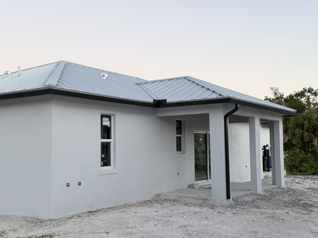
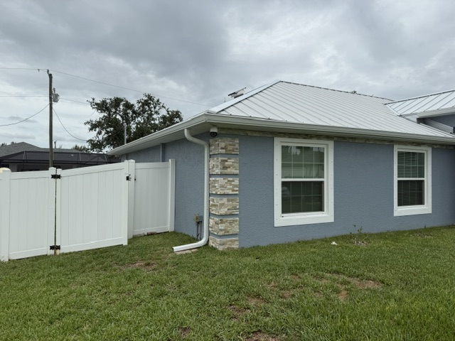

GUTTERS & DRAINAGE
Gutter installation & repair in Fort Myers
Good lines. Better rain days. Seamless gutters, repairs, cleaning and underground drainage for Fort Myers and Southwest Florida homes.
Send photos for an estimate ↗
BUILT FOR YOUR ROOFLINE
Seamless gutters, repairs and maintenance
Seamless gutters collect roof runoff. Downspouts guide it toward a suitable discharge point. John can assess the route and talk through installation or repairs for your property.
21+ years in the industry · licensed and insured · all estimates are free
Request your gutter estimate ↗- Seamless & super gutters New installations, replacements, and project-specific layouts.
- Repairs & cleanouts Tell John about leaks, blocked gutters, or a damaged section.
- Leaf guards & accessories Discuss what fits your gutters and maintenance needs.


UNDERGROUND DRAINAGE
Underground drainage for roof runoff
Wet areas beside your home? Ask John whether underground drainage can move collected roof runoff toward a suitable discharge point. A property assessment comes first; drainage does not solve every standing-water issue.
Explore underground drainage services
We do not offer grading. John assesses the property and proposed water route before recommending the scope.
John’s published ad lists a starting rate of $10 / ft for 4-inch underground drainage. Confirm current availability and your project price with John.
View John’s original rate ad ↗Shown in John’s published ad. Confirm current availability, eligibility and the final price for your project.
Show John your project ↗FREE HOMEOWNER EDUCATION
Gutters or another
water problem?
Compare safe observations about wet ground, gutter overflow and downspout runoff. Learn when gutter work may help and when another assessment is needed.
Read the homeowner guideUseful information first. Read without leaving contact details.
YOUR FREE GUTTER ESTIMATE
Show John the roofline and runoff.
Send a wide view of the home, close photos of any damage and the downspout locations. Explain whether you need new gutters, a repair, a cleanout or help with collected roof runoff. There is no minimum job size.
Browse screen and gutter servicesFort Myers and Southwest Florida
John serves Fort Myers, Cape Coral, Sanibel, Fort Myers Beach, Bonita Springs, Punta Gorda, Estero, Port Charlotte, LaBelle, Alva and nearby Southwest Florida. Share your location so John can confirm arrangements for your job.